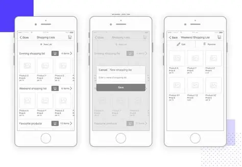
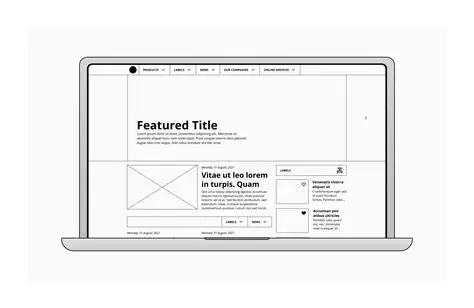

Site Name
PharmaCare Hub – This name represents a platform focused on pharmacy tools, medication safety, and healthcare resources. It was chosen to reflect both care and professional pharmacy practice.
Optional domain: pharmacarehub.org
Site Purpose
The site provides a hub for pharmacists and healthcare students by offering tools such as dosage calculators, drug interaction checkers, and educational resources. It will also include articles and guides to support safe medication practices.
Scenarios
- How can I quickly check if two medications interact?
- Where can I find a dosage calculator for pediatric patients?
Color Schema
Primary Color: #2E86C1 (Blue) – used for headings and navigation.
Secondary Color: #28B463 (Green) – used for accents, buttons, and highlights.
Typography
Fonts selected:
- Roboto – used for body text for readability.
- Montserrat – used for headings to provide a modern, professional look.
Wireframes
Below are the wireframe diagrams illustrating the layout for mobile and desktop views of the home page.
Mobile View

Desktop View
